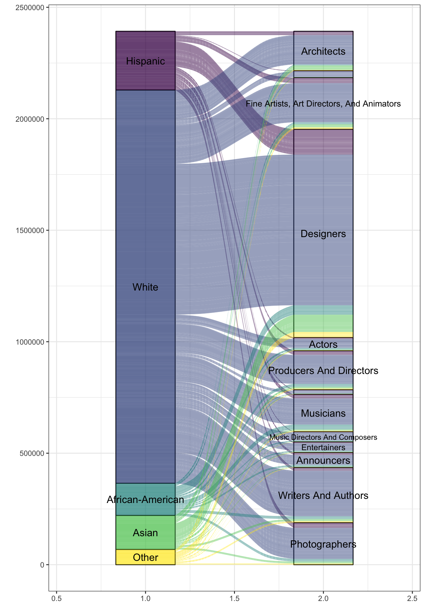

![]()
── Attaching packages ─────────────────────────────────────── tidyverse 1.3.2 ──
✔ ggplot2 3.3.6 ✔ purrr 0.3.4
✔ tibble 3.1.8 ✔ dplyr 1.0.10
✔ tidyr 1.2.0 ✔ stringr 1.4.1
✔ readr 2.1.2 ✔ forcats 0.5.1
── Conflicts ────────────────────────────────────────── tidyverse_conflicts() ──
✖ dplyr::filter() masks stats::filter()
✖ dplyr::lag() masks stats::lag()This posts cover the code and figures from the datascience workshop with R, where we explore some basics from dplyr and ggplot2 packages using the tidytuesday data set from the current week (2021-09-27).
Importing libraries
Importing data from TT
artists <- readr::read_csv("https://raw.githubusercontent.com/rfordatascience/tidytuesday/master/data/2022/2022-09-27/artists.csv")Rows: 3380 Columns: 7
── Column specification ────────────────────────────────────────────────────────
Delimiter: ","
chr (3): state, race, type
dbl (4): all_workers_n, artists_n, artists_share, location_quotient
ℹ Use `spec()` to retrieve the full column specification for this data.
ℹ Specify the column types or set `show_col_types = FALSE` to quiet this message.artists# A tibble: 3,380 × 7
state race type all_worke…¹ artis…² artist…³ locat…⁴
<chr> <chr> <chr> <dbl> <dbl> <dbl> <dbl>
1 Alabama Hispanic Architects 88165 45 5.10e-4 0.875
2 Alaska Hispanic Architects 26875 15 5.58e-4 0.957
3 Arizona Hispanic Architects 1033370 270 2.61e-4 0.448
4 Arkansas Hispanic Architects 101405 NA NA NA
5 California Hispanic Architects 7470730 3870 5.18e-4 0.888
6 Colorado Hispanic Architects 594525 200 3.36e-4 0.577
7 Connecticut Hispanic Architects 288845 150 5.19e-4 0.891
8 Delaware Hispanic Architects 41365 0 NA NA
9 District of Columbia Hispanic Architects 44885 185 4.12e-3 7.07
10 Florida Hispanic Architects 2752995 2900 1.05e-3 1.81
# … with 3,370 more rows, and abbreviated variable names ¹all_workers_n,
# ²artists_n, ³artists_share, ⁴location_quotientData manipulation
all_artists# A tibble: 5 × 2
race n
<fct> <dbl>
1 Hispanic 263555
2 White 1763570
3 African-American 144180
4 Asian 152650
5 Other 68378Data visualization

Alluvial plots
factored_artists <- artists |>
mutate(across(state:type, as_factor)) |>
group_by(race, type, state) |>
summarise(artists_n) |>
drop_na()`summarise()` has grouped output by 'race', 'type'. You can override using the
`.groups` argument.library(ggalluvial)
library(ggfittext)
ggplot(factored_artists) +
aes(y = artists_n, axis1 = race, axis2 = type, fill = race) +
geom_stratum(alpha = .5) +
geom_alluvium() +
geom_fit_text(stat = "stratum", aes(label = after_stat(stratum))) +
theme_bw() +
theme(
legend.position = "none"
) +
scale_fill_viridis_d() +
labs(
y = ""
)
Citation
BibTeX citation:
@misc{garcía-botero2021,
author = {Camilo García-Botero},
editor = {},
title = {Artists in the {USA}},
date = {2021-09-27},
url = {https://camilogarciabotero.github.io/biocomp/blog},
langid = {en}
}
For attribution, please cite this work as:
Camilo García-Botero. 2021. “Artists in the USA.” https://camilogarciabotero.github.io/biocomp/blog.